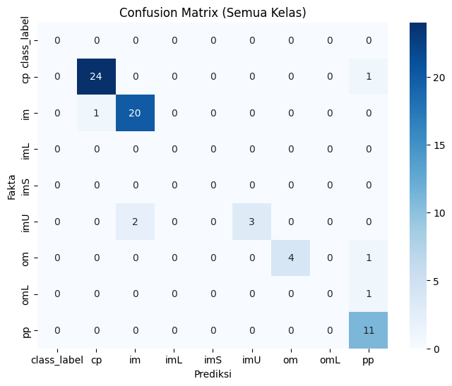
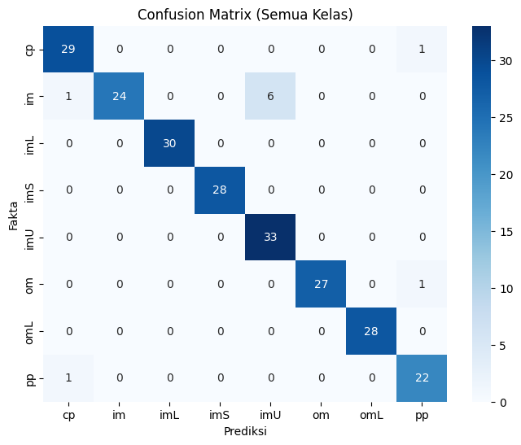
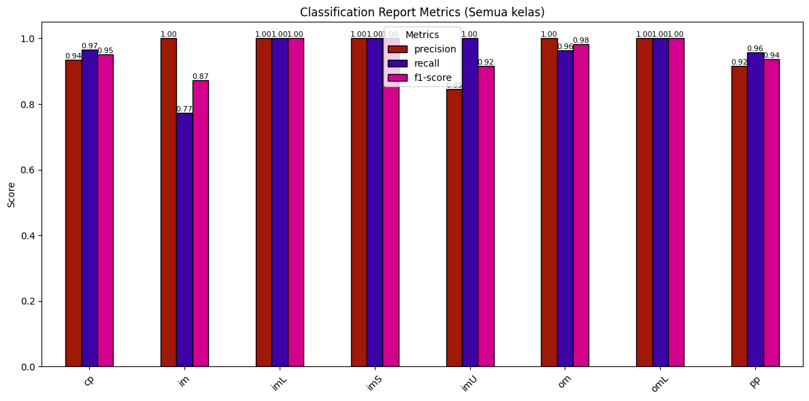

Random forest Classifier Ecoli#
Ini adalah tahap modeling klasifikasi data ecoli menggunakan metode Random Forest dengan kondisi
Data ecoli yang belum di lakukan oversampling
Data ecoli yang sudah di lakukan oversampling menggunakan SMOTE
Data ecoli yang sudah di lakukan oversampling menggunakan ADASYN
kemudian di bandingkan apakah ada penambahan akurasi saat setelah data di lakukan oversampling
Library yang digunakan#
import pandas as pd
from sklearn.model_selection import train_test_split
from sklearn.ensemble import RandomForestClassifier
from sklearn.ensemble import BaggingClassifier
from sklearn.metrics import accuracy_score, classification_report, confusion_matrix
from sqlalchemy import create_engine
import matplotlib.pyplot as plt
import seaborn as sns
import numpy as np
Koneksi ke database MySql dan Kondisi Data sebelum dilakukan Oversampling#
engine = create_engine("mysql+pymysql://root:@localhost:3306/ecoli")
# ambil data dari tabel
df = pd.read_sql("SELECT * FROM ecoli;", engine)
class_counts = df['class_label'].value_counts().sort_index()
nt = df.drop(columns=["class_label", "id_protein"])
ns = df["class_label"]
print("\nInfo Dataset:")
df
Info Dataset:
| id_protein | feature1 | feature2 | feature3 | feature4 | feature5 | feature6 | feature7 | class_label | |
|---|---|---|---|---|---|---|---|---|---|
| 0 | AAS_ECOLI | 0.44 | 0.52 | 0.48 | 0.5 | 0.43 | 0.47 | 0.54 | im |
| 1 | AAT_ECOLI | 0.49 | 0.29 | 0.48 | 0.5 | 0.56 | 0.24 | 0.35 | cp |
| 2 | ACEA_ECOLI | 0.07 | 0.40 | 0.48 | 0.5 | 0.54 | 0.35 | 0.44 | cp |
| 3 | ACEK_ECOLI | 0.56 | 0.40 | 0.48 | 0.5 | 0.49 | 0.37 | 0.46 | cp |
| 4 | ACKA_ECOLI | 0.59 | 0.49 | 0.48 | 0.5 | 0.52 | 0.45 | 0.36 | cp |
| ... | ... | ... | ... | ... | ... | ... | ... | ... | ... |
| 332 | XYLA_ECOLI | 0.16 | 0.43 | 0.48 | 0.5 | 0.54 | 0.27 | 0.37 | cp |
| 333 | XYLE_ECOLI | 0.69 | 0.39 | 0.48 | 0.5 | 0.57 | 0.76 | 0.79 | im |
| 334 | XYLF_ECOLI | 0.59 | 0.61 | 0.48 | 0.5 | 0.42 | 0.42 | 0.37 | pp |
| 335 | YCEE_ECOLI | 0.52 | 0.54 | 0.48 | 0.5 | 0.62 | 0.76 | 0.79 | im |
| 336 | YTFQ_ECOLI | 0.74 | 0.74 | 0.48 | 0.5 | 0.31 | 0.53 | 0.52 | pp |
337 rows × 9 columns
Hasil Data setelah dilakukan oversampling menggunakan ADASYN#
data_adasyn = pd.read_csv("../balance/hasil_oversampling_ADASYN.csv")
x_adasyn = data_adasyn.drop(columns=["class_label"])
y_adasyn = data_adasyn["class_label"]
data_adasyn
| feature1 | feature2 | feature3 | feature4 | feature5 | feature6 | feature7 | class_label | |
|---|---|---|---|---|---|---|---|---|
| 0 | 0.440000 | 0.520000 | 0.48 | 0.5 | 0.430000 | 0.470000 | 0.540000 | im |
| 1 | 0.490000 | 0.290000 | 0.48 | 0.5 | 0.560000 | 0.240000 | 0.350000 | cp |
| 2 | 0.070000 | 0.400000 | 0.48 | 0.5 | 0.540000 | 0.350000 | 0.440000 | cp |
| 3 | 0.560000 | 0.400000 | 0.48 | 0.5 | 0.490000 | 0.370000 | 0.460000 | cp |
| 4 | 0.590000 | 0.490000 | 0.48 | 0.5 | 0.520000 | 0.450000 | 0.360000 | cp |
| ... | ... | ... | ... | ... | ... | ... | ... | ... |
| 1149 | 0.674724 | 0.515276 | 0.48 | 0.5 | 0.678345 | 0.726259 | 0.748345 | im |
| 1150 | 0.626167 | 0.458683 | 0.48 | 0.5 | 0.114786 | 0.783833 | 0.387902 | im |
| 1151 | 0.673235 | 0.625699 | 0.48 | 0.5 | 0.640000 | 0.875918 | 0.838344 | im |
| 1152 | 0.644836 | 0.398836 | 0.48 | 0.5 | 0.571964 | 0.771782 | 0.799818 | im |
| 1153 | 0.687712 | 0.396247 | 0.48 | 0.5 | 0.548123 | 0.879794 | 0.893822 | im |
1154 rows × 8 columns
Hasil Data setelah dilakukan oversampling menggunakan SMOTE#
data_smote = pd.read_csv("../balance/ecoli_balanced_smote.csv")
x_smote = data_smote.drop(columns=["class_label"])
y_smote = data_smote["class_label"]
data_smote
| id_protein | feature1 | feature2 | feature3 | feature4 | feature5 | feature6 | feature7 | class_label | |
|---|---|---|---|---|---|---|---|---|---|
| 0 | P0001 | 0.000000 | 0.000000 | 0.00 | 0.0 | 0.000000 | 0.000000 | 0.000000 | class_label |
| 1 | P0002 | 0.000000 | 0.000000 | 0.00 | 0.0 | 0.000000 | 0.000000 | 0.000000 | class_label |
| 2 | P0003 | 0.000000 | 0.000000 | 0.00 | 0.0 | 0.000000 | 0.000000 | 0.000000 | class_label |
| 3 | P0004 | 0.000000 | 0.000000 | 0.00 | 0.0 | 0.000000 | 0.000000 | 0.000000 | class_label |
| 4 | P0005 | 0.000000 | 0.000000 | 0.00 | 0.0 | 0.000000 | 0.000000 | 0.000000 | class_label |
| ... | ... | ... | ... | ... | ... | ... | ... | ... | ... |
| 1282 | P1283 | 0.609350 | 0.610000 | 0.48 | 0.5 | 0.441769 | 0.407906 | 0.372419 | pp |
| 1283 | P1284 | 0.669894 | 0.700106 | 0.48 | 0.5 | 0.459468 | 0.450532 | 0.330213 | pp |
| 1284 | P1285 | 0.628449 | 0.804652 | 0.48 | 0.5 | 0.460000 | 0.317753 | 0.307057 | pp |
| 1285 | P1286 | 0.630000 | 0.800000 | 0.48 | 0.5 | 0.460000 | 0.310000 | 0.290000 | pp |
| 1286 | P1287 | 0.678966 | 0.601034 | 0.48 | 0.5 | 0.503275 | 0.365517 | 0.366550 | pp |
1287 rows × 9 columns
Hasil Akurasi Klasifikasi Data Ecoli yang Belum di Oversampling Adasyn#
X_train, X_test, y_train, y_test = train_test_split(
nt, ns, test_size=0.2, random_state=42
)
rf = RandomForestClassifier(random_state=42)
rf.fit(X_train, y_train)
prediksi = rf.predict(X_test)
print(f"accuracy_score : {accuracy_score(y_test, prediksi)}")
print("Classification Report:\n", classification_report(y_test, prediksi, zero_division=0))
# confuison matrix
labels = np.unique(np.concatenate([y_train, y_test]))
cm = confusion_matrix(y_test, prediksi, labels=labels)
plt.figure(figsize=(8,6))
sns.heatmap(cm, annot=True, fmt="d", cmap="Blues",
xticklabels=labels, yticklabels=labels)
plt.xlabel("Prediksi")
plt.ylabel("Fakta")
plt.title("Confusion Matrix (Semua Kelas)")
plt.show()
all_labels = np.unique(np.concatenate([y_train, y_test]))
report = classification_report(
y_test, prediksi, labels=all_labels,
output_dict=True, zero_division=0
)
df_report = pd.DataFrame(report).transpose()
metrics_df = df_report[['precision','recall','f1-score']].iloc[:-3]
# warna diagram batang
ax = metrics_df.plot(
kind='bar',
figsize=(12,6),
color=["#a01806", "#3c03a7", "#d4008e"], # biru, oranye, hijau
edgecolor='black'
)
plt.title("Classification Report Metrics (Semua kelas)")
plt.ylabel("Score")
plt.ylim(0,1.05)
plt.xticks(rotation=45)
# diagram batang
for p in ax.patches:
value = f"{p.get_height():.2f}"
x = p.get_x() + p.get_width()/2
y = p.get_height()
ax.annotate(value, (x, y), ha='center', va='bottom', fontsize=8, rotation=0)
plt.legend(title="Metrics")
plt.tight_layout()
plt.show()
accuracy_score : 0.9117647058823529
Classification Report:
precision recall f1-score support
cp 0.96 0.96 0.96 25
im 0.91 0.95 0.93 21
imU 1.00 0.60 0.75 5
om 1.00 0.80 0.89 5
omL 0.00 0.00 0.00 1
pp 0.79 1.00 0.88 11
accuracy 0.91 68
macro avg 0.78 0.72 0.73 68
weighted avg 0.91 0.91 0.90 68


Hasil Akurasi Klasifikasi Data Ecoli yang Sudah di Oversampling menggunakan adasyn#
X_train_smote, X_test_smote, y_train_smote, y_test_smote = train_test_split(
x_adasyn, y_adasyn, test_size=0.2, random_state=42
)
rf = RandomForestClassifier(random_state=42)
rf.fit(X_train_smote, y_train_smote)
prediksi_smote = rf.predict(X_test_smote)
print(f"accuracy_score : {accuracy_score(y_test_smote, prediksi_smote)}")
print("Classification Report:\n", classification_report(y_test_smote, prediksi_smote, zero_division=0))
# confuison matrix
labels = np.unique(np.concatenate([y_train_smote, y_test_smote]))
cm = confusion_matrix(y_test_smote, prediksi_smote, labels=labels)
plt.figure(figsize=(8,6))
sns.heatmap(cm, annot=True, fmt="d", cmap="Blues",
xticklabels=labels, yticklabels=labels)
plt.xlabel("Prediksi")
plt.ylabel("Fakta")
plt.title("Confusion Matrix (Semua Kelas)")
plt.show()
all_labels = np.unique(np.concatenate([y_train_smote, y_test_smote]))
report = classification_report(
y_test_smote, prediksi_smote, labels=all_labels,
output_dict=True, zero_division=0
)
df_report = pd.DataFrame(report).transpose()
metrics_df = df_report[['precision','recall','f1-score']].iloc[:-3]
# warna diagram batang
ax = metrics_df.plot(
kind='bar',
figsize=(12,6),
color=["#a01806", "#3c03a7", "#d4008e"], # biru, oranye, hijau
edgecolor='black'
)
plt.title("Classification Report Metrics (Semua kelas)")
plt.ylabel("Score")
plt.ylim(0,1.05)
plt.xticks(rotation=45)
# diagram batang
for p in ax.patches:
value = f"{p.get_height():.2f}"
x = p.get_x() + p.get_width()/2
y = p.get_height()
ax.annotate(value, (x, y), ha='center', va='bottom', fontsize=8, rotation=0)
plt.legend(title="Metrics")
plt.tight_layout()
plt.show()
accuracy_score : 0.9567099567099567
Classification Report:
precision recall f1-score support
cp 0.94 0.97 0.95 30
im 1.00 0.77 0.87 31
imL 1.00 1.00 1.00 30
imS 1.00 1.00 1.00 28
imU 0.85 1.00 0.92 33
om 1.00 0.96 0.98 28
omL 1.00 1.00 1.00 28
pp 0.92 0.96 0.94 23
accuracy 0.96 231
macro avg 0.96 0.96 0.96 231
weighted avg 0.96 0.96 0.96 231

